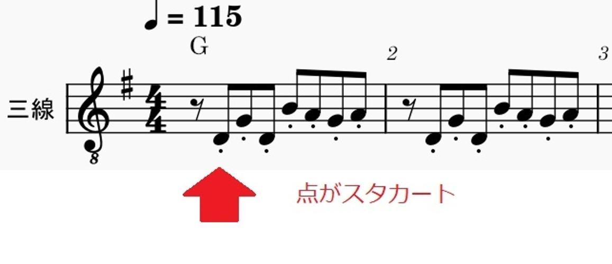

うるがいの話 ある日
最新: スタッカートとは【うるがいの話 ある日】とは 一日だけのプログです
『うるがいの話』の最新一日だけのプログで、通信料が少なく経済的だ。カニの画像をクリックすると全ての日付が載る『うるがいの話』サイトを表示します
|
|
【うるがいの話】 うるがい(ｳﾙｶﾞｲ urugai)とは、『もずくがに』の名前でとても大きくなります。 |
|---|---|
|
|
【カミマヤーの話】 猫のことを方言でマヤーといいます。カミマヤー（kamimayaa）とは、神の猫のことです。 |
|
【たながぁの音楽】 たながぁ（ﾀﾅｶﾞｰ tanagaa）とは手長えびのことで、何種類かあり大きいのは車 エビぐらいになります。 |

|
【ぶながぁの話】 ぶながぁ(ﾌﾞﾅｶﾞｰ bunagaa)とは、赤い髪の毛、赤い身体、そして身長は１ｍ２０ｃｍ ぐらい、川の蟹を食べているの目撃された。場所は沖縄県国頭郡大宜味村のと ある村僕の隣近所に住んでいる爺さんから、聞いた話です。 |
|
|
【ギーマの話】 ギーマ(giima)とは、山原の里山に咲くスズランに似た、 花を付けます。実は食べられます、 気が付くと口の周りが紫になっています。 |
2026年09月28日 (月）スタッカートとは
15:49

スタッカート？ 新聞の投稿より
「スタッカートを意識して歌ってみましょう」。先生の言葉に私
は心で「どういう意味？」とつぶやいた。・・・・・・・・・・
まずは大阪城ホールで１万人の声の一つになる。そして私自身の
「第二楽章」を始めたい。ちなみにスタッカートはまだ理解でき
ていない。
スタッカート：意味はイタリア語で「離す」。音価の半分以下程
度の長さを想定！
フムフム、毎度現れるスタッカート。投稿、ついでにもう一つ
絵に描いた餅にならないよう 新聞の投稿より
最大の目玉は経済政策だった。１人当たり県民所得２３１・５万
円を１０年で５００万円水準へ持っていくという夢のような話で
広く県民の支持を集めた。
フムフム、所得倍増のことか。その昔、会社で評価制度が導入さ
れたとき、とんでもない目標値が上司から、伝えられる。そのた
びに憤りを感じた。現場が出来ないことを、軽々と言うなと。
美ら海が、三役（小結）にほぼなる。相撲の話である、さて三役
とは、
相撲でいう「三役」とは、大関・関脇・小結の３つの地位の総称
です。横綱を除いた幕内上位の特別な地位を指します。
中途入社の私が、新しい職場の飲み会に行くと会社でハゲの度合
いの番付で盛り上がっていた。最初は違和感があったが、暫くす
ると名前と顔（頭）に違和感がなくなり、話を理解できるように
なった。それにしても、髪の毛が少ない人が多い職場だった。
中城村は台風の接近を受け、２８日の村立小中学校の休校を決め
た。
中城村は難しい判断だったでしょう。朝、雨は降るが風はほとん
どなっかたス。私は、明日の草木のゴミ収集（８袋）が暴風警報
だったらと心配していたぐらいだから。